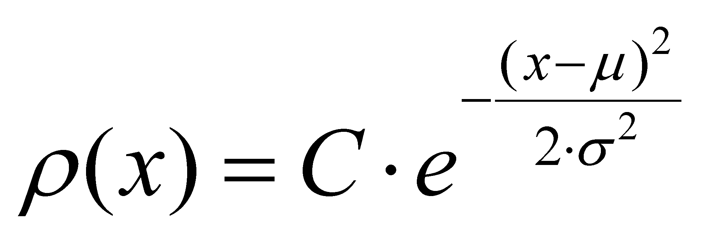
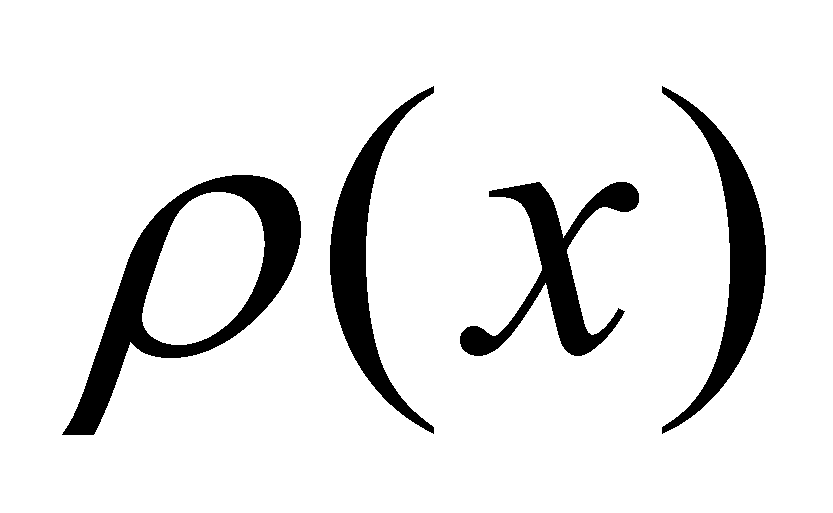
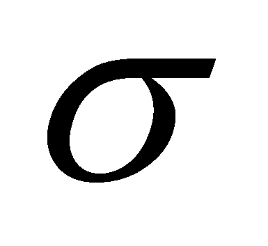

|
|
|
Unlike the abstract distributions (virtual or realizable) which are synthetic, mathematic models (“build” by an IPS), the properties of the sets of real objects have also some distributions, but these are self-settled94 by means of repeated interactions deployed between all the objects of the set. However, a specification is required: the properties whose distributions are self-settled within a set of real objects must be transmissible (namely, it is required to be carried by a flux), and the interactions are even the property interchange (transactions) processes between the two objects which are interrelated one another95.
The natural distributions are evaluated by the human IPS by means of a complex mixed process, made-up from a series of real (experiments) and abstract processes (information processing obtained by means of experiments). This way has allowed that the attribute distributions of the real objects to be known, such as the distribution of the molecular velocity into gases, the frequency of the thermal photons, of the richness or education level of the individuals belonging to a society etc.
It was found that for most of the attributes distributed on a set made-up from real objects, the Gauss-type distribution may be applied (also named normal distribution):
 (X.5.4.1)
where  is the population of the distribution’s elementary support dx (fraction, number of objects from the set which own the value x of the support property, C is a normalization constant, is the mean value (internal reference of the distribution object),  represents the variance and x is the internal reference of the support element dx.
If we are talking about the distribution of the velocity within a gas96, x is the velocity value (more exactly, its modulus), is the fraction from the molecule population which reaches to that particular velocity, and is the mean velocity, that is a calculus value depending on the conditions in which the gas may be found (temperature, pressure etc.). This mean value is the reference against which the gas molecules are divided in two complementary classes: the molecules with a velocity surplus (as compared to the mean values) and the ones with a velocity deficit. In this case, the positive or negative character of the two complementary properties is given only by the symbol of the difference between the value of the molecular velocity and the mean value, therefore, by a quantitative value. However, for people, this symbol is a qualitative attribute because any school boy knows that positive numbers are different in terms of quality as compared to the negative ones, although they are different (at the same modulus) only by the symbol which is placed in front of them.
Comment X.5.4.1: If the reader has already read the chapter 2, he will probably notice a discrepancy between the denomination for some of the Gauss-type distributions presented in the current scientific papers (or of other distributions of an attribute on a set of objects, such as the Maxwell or Plank distribution) and the name of the distributions given according to the model used in the mathematics field (which is also used in the present paper). In chapter 2, we saw that a distribution has a distributed attribute (dependent variable displayed on the vertical axis) and a support attribute (independent variable displayed on the horizontal axis), with a set of assignment relations deployed between their values (relations which can be symbolically invariant - functions - such as the case of the above-mentioned distributions). The name of a distribution must specify the distributed attribute and its support. It is clear that as regards the Gauss-type distribution, the support (mathematic) attribute is the variable x, and (number of the elements which own that value) is a distributed attribute (this should be put at the genitive in order to show the affiliation to all the support objects). On the other hand, the elements belonging to the set of objects are material supports (ISS) of the information regarding the existence of the property x, but they are not the distribution’s support and their number is the distributed attribute. It is compulsory that a clear distinction to be made between the notion of distribution’s support (as an independent variable), and the one of material support of an information (ISS). Because the denominations of the above-mentioned distributions are quite frequent in the specialized papers, we shall further tolerate them although they are inaccurate in terms of the distributions definition.
94 Self-settle means that the quantitative values of the attributes are not imposed by an IPS, but they are distributed on the set of the involved objects, by means of a simple interaction between the real objects, through real, natural processes.
95 For instance, the distribution of the individual kinetic energy of the molecules on the set of the gas molecules, or the distribution of the material assets which are owned by an individual (richness) belonging to a human population.
96 Distribution known as Maxwell distribution but which is similar with Gauss distribution.
Copyright © 2006-2011 Aurel Rusu. All rights reserved.